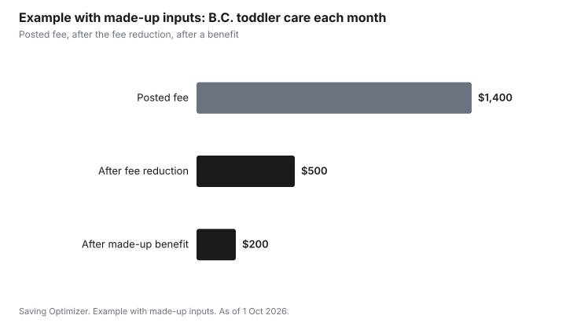

Kids · Canada
BC Child Care Costs: $10-a-Day Sites, Fee Reductions and the Affordable Child Care Benefit
B.C. child care costs depend on three layers. A $10 a Day ChildCareBC site charges $200 a month for full-time care. At other participating licensed centres, the Child Care Fee Reduction Initiative lowers the monthly fee by up to $900 per child, with no application. On top of either, families with income generally up to $111,000 can apply for the Affordable Child Care Benefit, an income-tested monthly payment. Ask which layer your centre is in, then apply for the benefit if your income may qualify.
Key takeaways
- $10 a Day sites charge $200 a month for full-time regular hours.
- The Child Care Fee Reduction Initiative cuts fees at participating centres: up to $900 a month for under 36 months in group care, $545 for age 3 to kindergarten, $320 for kindergarten and $115 for grade 1 to age 12. Families do not apply.
- Out-of-pocket fees after the fee reduction will not go below $200 a month for full-time care, with limited exceptions.
- The Affordable Child Care Benefit is income-tested. Families earning up to $111,000 may qualify; maximums run from $1,250 a month for a child under 19 months in group care.
- Example with made-up inputs: a $1,400 toddler fee falls to $500 after the fee reduction, then lower with a benefit.
$10 a Day ChildCareBC sites
$10 a Day sites are licensed centres funded so that parents pay $200 a month for full-time care during regular hours. Spaces are limited and centres keep their own waitlists. ChildCareBC's map shows which centres are $10 a Day sites. Providers receiving base funding cannot charge waitlist fees, though deposits to hold a space are permitted at the provider's discretion. Ask what any optional fees cover.
The Child Care Fee Reduction Initiative
Most licensed centres in B.C. opt in to the Child Care Fee Reduction Initiative. The province pays the centre, and the centre lowers your monthly fee. Families do not apply, and the program is not income-tested. Children aged 12 and under at a participating centre are eligible. Part-time care is pro-rated, and children enrolled four hours or less a day receive 50 percent of the full-day amount.
| Age | Group care | Family care |
|---|---|---|
| Under 36 months | $900 | $600 |
| 3 years to kindergarten | $545 | $500 |
| Kindergarten | $320 | $320 |
| Grade 1 to age 12 | $115 | $145 (family and in-home) |
| Preschool | $95 | Not applicable |
The fee reduction does not cover optional fees, and providers cannot start charging optional fees for services that used to be part of the parent fee. Out-of-pocket fees after the reduction will not fall below $200 a month for full-time care, with limited exceptions.
The Affordable Child Care Benefit
The Affordable Child Care Benefit is a monthly payment for families who meet income and qualifying-reason rules. The province says families earning up to $111,000 may generally qualify, and families above that with large deductions for family size or children with support needs may also apply. Income is reduced by $2,000 for each family member after the first two, and by $3,000 for each child with support needs.
You need a qualifying reason, such as working, going to school or looking for work. Maternity or parental leave is not a qualifying reason. Apply before the end of the month you need care, and renew every year. The benefit is usually paid to the provider, and you pay the balance.
| Child's age | Maximum per month |
|---|---|
| Under 19 months | $1,250 |
| 19 months to under 37 months | $1,060 |
| 37 months to school age | $550 |
| School age | $415 |
| Care surrounding a school day | $210 |
The maximum is available to families with adjusted income up to $45,000 for licensed care, with partial amounts above that. The benefit plus any support-needs supplement cannot exceed the fee charged. Use the province's Affordable Child Care Benefit Estimator with your numbers.
Taxes: the federal deduction still applies
What you actually pay after the fee reduction and the benefit can be claimed under the federal child care expense deduction, up to $8,000 per child under 7 and $5,000 for ages 7 to 16, generally by the lower-income spouse. The T778 guide covers the claim.
Example with made-up inputs: a toddler in group care
These numbers are an example with made-up inputs, not centre fees or a benefit decision. A centre's posted fee for a toddler is $1,400 a month. The fee reduction of $900 brings it to $500. A family whose made-up benefit is $300 pays $200. A $10 a Day site would be $200 from the start, with no benefit needed for that result.
| Stage | Monthly cost |
|---|---|
| Posted fee | $1,400 |
| After fee reduction | $500 |
| After a made-up $300 benefit | $200 |

Sources
- Government of B.C., Child Care Fee Reduction Initiative: information for families, last updated 21 July 2026, as of 1 Oct 2026. No application; not income-tested; maximum full-time reductions; part-time pro-rating; $200 floor; waitlist fees and optional fees.
- Government of B.C., Affordable Child Care Benefit eligibility and funding estimate, last updated 14 September 2026, as of 1 Oct 2026. Generally up to $111,000; family-size and support-needs adjustments; qualifying reasons; maximum benefit up to $45,000 adjusted income for licensed care.
- Government of B.C., Affordable Child Care Benefit rates, last updated 25 March 2026, as of 1 Oct 2026. Licensed group care maximums $1,250, $1,060, $550, $415 and $210.
- ChildCareBC programs page. $10 a Day sites at $200 a month for full-time regular hours.
- Income Tax Act, section 63. Federal deduction limits.
- The $1,400 fee and $300 benefit in the example are made-up inputs.
Frequently asked questions
How much does a $10 a Day child care space cost in B.C.?
ChildCareBC says families at $10 a Day sites pay $200 a month for full-time care during regular hours.
Do I have to apply for B.C.'s Child Care Fee Reduction Initiative?
No. Participating licensed centres apply the reduction to your fee each month. It is not income-tested. Maximum full-time reductions are $900 for under 36 months in group care, $545 for age 3 to kindergarten, $320 for kindergarten and $115 for grade 1 to age 12.
Who qualifies for B.C.'s Affordable Child Care Benefit?
It is income-tested. The province says families earning up to $111,000 may generally qualify, with deductions for family size and children with support needs. You also need a qualifying reason, such as working or going to school; parental leave is not one.
How much is the Affordable Child Care Benefit?
Maximums depend on care type and age. For licensed group care they run from $1,250 a month for a child under 19 months to $415 for a school-age child. The maximum applies at adjusted income up to $45,000 for licensed care, with partial amounts above that.
Can I claim B.C. child care on my taxes?
Yes, what you actually pay after reductions and benefits can be claimed under the federal child care expense deduction, generally by the lower-income spouse, up to $8,000 per child under 7 and $5,000 for ages 7 to 16.
Researched and drafted with AI assistance and fact-checked against official Canadian sources. How we create content.
Disclosure: No provider is recommended or ranked. Saving Optimizer may earn a commission if a partner link is added later; no partnership is claimed. Education only. Confirm amounts with ChildCareBC.